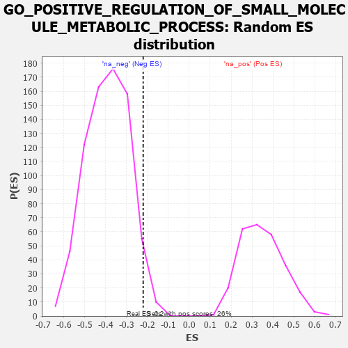

| | | Dataset | 7d |
| Phenotype | NoPhenotypeAvailable |
| Upregulated in class | na_neg |
| GeneSet | GO_POSITIVE_REGULATION_OF_SMALL_MOLECULE_METABOLIC_PROCESS |
| Enrichment Score (ES) | -0.22011465 |
| Normalized Enrichment Score (NES) | -0.56523377 |
| Nominal p-value | 0.97286296 |
| FDR q-value | 1.0 |
| FWER p-Value | 1.0 |
Table: GSEA Results Summary
 Fig 1: Enrichment plot: GO_POSITIVE_REGULATION_OF_SMALL_MOLECULE_METABOLIC_PROCESS
Fig 1: Enrichment plot: GO_POSITIVE_REGULATION_OF_SMALL_MOLECULE_METABOLIC_PROCESS
Profile of the Running ES Score & Positions of GeneSet Members on the Rank Ordered List
| PROBE | GENE SYMBOL | GENE_TITLE | RANK IN GENE LIST | RANK METRIC SCORE | RUNNING ES | CORE ENRICHMENT | | 1 | IRS1 | | | 98 | 1.659 | 0.1350 | Yes |
| 2 | ARNT | | | 357 | 0.741 | 0.1684 | Yes |
| 3 | AKT1 | | | 1040 | 0.476 | 0.1249 | Yes |
| 4 | SRC | | | 1128 | 0.459 | 0.1547 | Yes |
| 5 | P2RY1 | | | 1416 | 0.407 | 0.1548 | Yes |
| 6 | GPT | | | 1488 | 0.392 | 0.1806 | Yes |
| 7 | DDB1 | | | 1642 | 0.366 | 0.1939 | Yes |
| 8 | KAT2B | | | 2502 | 0.226 | 0.1059 | No |
| 9 | WDR5 | | | 2892 | 0.168 | 0.0719 | No |
| 10 | TAZ | | | 2933 | 0.161 | 0.0811 | No |
| 11 | WNT4 | | | 3023 | 0.146 | 0.0829 | No |
| 12 | ABCD1 | | | 3677 | 0.047 | 0.0049 | No |
| 13 | CPT1A | | | 5467 | -0.311 | -0.1925 | No |
| 14 | ACTN3 | | | 5486 | -0.315 | -0.1668 | No |
| 15 | CLYBL | | | 5619 | -0.350 | -0.1523 | No |
| 16 | ABCG1 | | | 5778 | -0.399 | -0.1367 | No |
| 17 | SCAP | | | 5986 | -0.466 | -0.1214 | No |
| 18 | INSR | | | 6204 | -0.538 | -0.1008 | No |
| 19 | RGN | | | 6233 | -0.547 | -0.0557 | No |
| 20 | PLIN5 | | | 6524 | -0.672 | -0.0325 | No |
| 21 | DYRK2 | | | 6533 | -0.677 | 0.0267 | No |
| 22 | PTH1R | | | 6845 | -0.839 | 0.0621 | No |
| 23 | GHSR | | | 6937 | -0.894 | 0.1301 | No |
Table: GSEA details [plain text format]

Fig 2: GO_POSITIVE_REGULATION_OF_SMALL_MOLECULE_METABOLIC_PROCESS: Random ES distribution
Gene set null distribution of ES for GO_POSITIVE_REGULATION_OF_SMALL_MOLECULE_METABOLIC_PROCESS